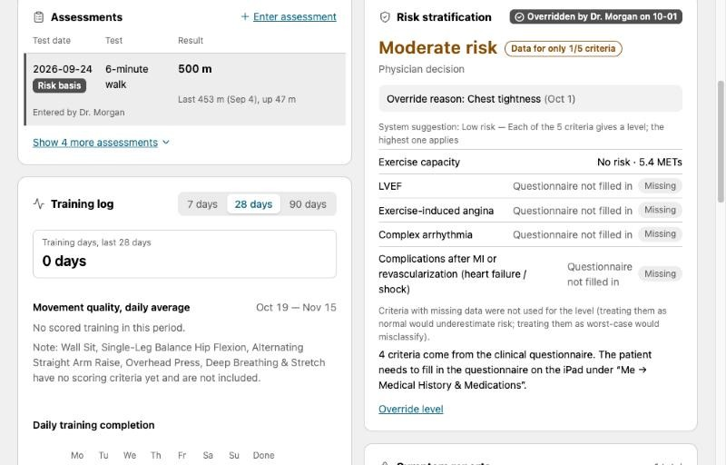

Keep prescriptions in draft until a physician approves them
The risk level and draft prescription come from a formula the partner physician provided, a general method that fits most patients but can’t know what a patient’s own physician knows. So the system does the calculation, saving the physician most of the time a prescription takes, and the physician makes the call. The formula isn’t AI yet, on purpose: without enough data, a model could be wrong in ways no one could check. So the formula calculates, the physician decides, and every override is recorded with its reason. Those overrides are the data a future model will have to beat. Today the product’s one AI model does perception, tracking body movement on the tablet. The server enforces the approval step: in scripted checks against the running API, a patient couldn’t see or edit a draft, an unassigned physician couldn’t confirm it, and a confirmed plan couldn’t be altered.
Approval adds work for physicians. A single primary action for each review state keeps the process focused.
